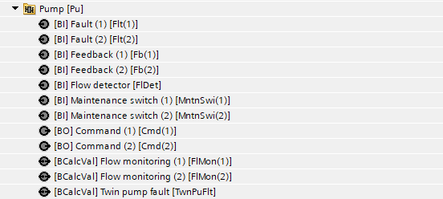
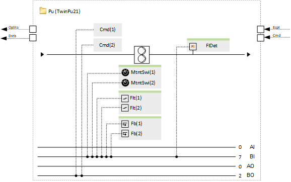
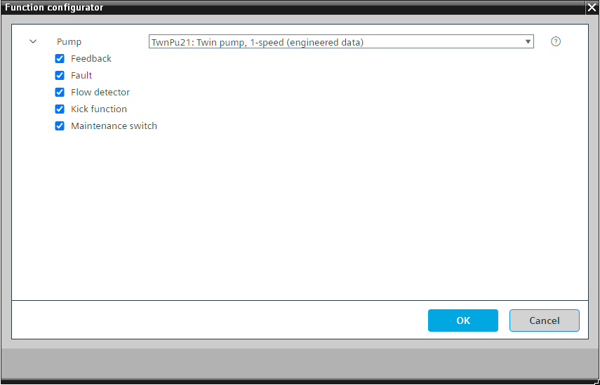

[TwnPu21] 双泵，1 速
Program block, name / node subtype: [TwnPu21] Twin pump, 1-speed
Library hierarchy: Universal equipment
Family: Pu
项目树 | 图表 |
|---|---|
|
 |  |
Configurator


程序块存储在没有 I/Os. 的库中 使用auto-create and auto-connect函数创建 I/Os 和 /or 将它们连接到接口块，例如 R_A、CMD_B。或者，从包含库中预定义 I/Os 的文件夹中取出 I/Os，并从工厂中取出 /or，并将它们连接到接口块。
控制 1 速双泵。
当双泵开启时，一台泵电机运行，另一台泵电机关闭。程序逻辑（功能块 ROT_8）测量两个电机的运行时间，并在泵打开时以较少的运行时间打开电机。
如果一个电机出现问题，程序就会切换到另一个电机。仅当两个电机均出现问题时，计算值对象“双泵故障”才会生成警报。
该程序块具有以下可选功能：
Option: Fault (2xBI)
从泵控制单元读取故障信号并生成警报。
每个电机都有一个故障信号。
Option: Feedback (2xBI)
读取反馈信号（例如来自泵控制单元的反馈信号），如果在泵必须运行时缺少反馈，则会生成警报。
每个电机都有一个反馈信号。
Option: Flow detector (1xBI)
读取来自流量检测器的信号。
程序逻辑对于每个电机都有两个值对象，如果在电机应运行时未检测到流量，则这些值对象将发出警报。如果一台电机启动但未检测到流量，则其值对象将进入报警状态，逻辑将其关闭并打开另一台电机。如果两个值对象均处于报警状态，则“双泵故障”会生成报警。
您可以抑制二进制输入“流量检测器”的报警（属性“抑制事件检测”= 是），以免生成太多报警。
Option: Kick function
通过生成一个脉冲，在最短关闭时间过后，在配置的时间以定义的脉冲长度启动泵，从而防止停机损坏。
This is configured in the program.
Option: Maintenance switch (2xBI)
读取维护开关的信号并产生警报。如果激活，则泵的输出将以非常高的优先级（优先级 2）停止。
每个电机都有一个维护开关信号。
姓名 | 描述 | 类型 | 报警/通知类 | 趋势/类型 | |
|---|---|---|---|---|---|
Cmd(1) | Command | BO：二进制输出 | No | 是的，4 | |
Cmd(2) | Command | BO：二进制输出 | No | 是的，4 | |
TwnPuFlt | Twin pump fault | BCalcVal: Binary calculated value | 是的，4 | No | |
Rot | Rotation | ROT_8：旋转 | N/A | N/A | |
姓名 | 描述 | 类型 | 报警/通知类 | 趋势/类型 |
|---|---|---|---|---|
Maintenance switch | ||||
MntnSwi(1) | Maintenance switch (1) | BI：二进制输入 | 是的，5 | No |
MntnSwi(2) | Maintenance switch (2) | BI：二进制输入 | 是的，5 | No |
Fault | ||||
Flt(1) | Fault (1) | BI：二进制输入 | Yes, 4/5 | No |
Flt(2) | Fault (2) | BI：二进制输入 | Yes, 4/5 | No |
Feedback | ||||
Fb(1) | Feedback (1) | BI：二进制输入 | 是的，4 | No |
Fb(2) | Feedback (2) | BI：二进制输入 | 是的，4 | No |
FlDet | Flow detector | BI：二进制输入 | 是的，4 | No |
描述 |
|---|
Kick function |